Mentored by twelve departments.
The Inter-Departmental Programme Committee brings together faculty from across IIT Bombay to design the curriculum and advise every CME student one-on-one.
Prof. Rajesh Zele
Leading the Centre for Multidisciplinary Education and the 2026 incoming-student orientation.
The committee behind your degree.
Twelve faculty members from Computer Science, Design, Management, Chemistry, Mechanical, Civil, Biosciences, Materials and Humanities.
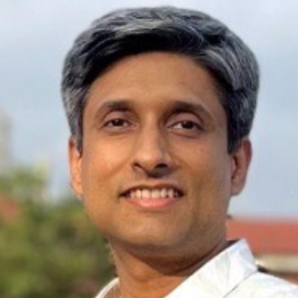
Computer Science & Engineering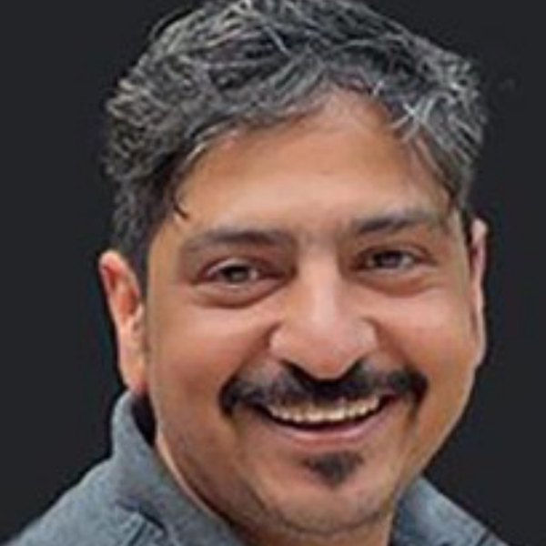
Industrial Design Centre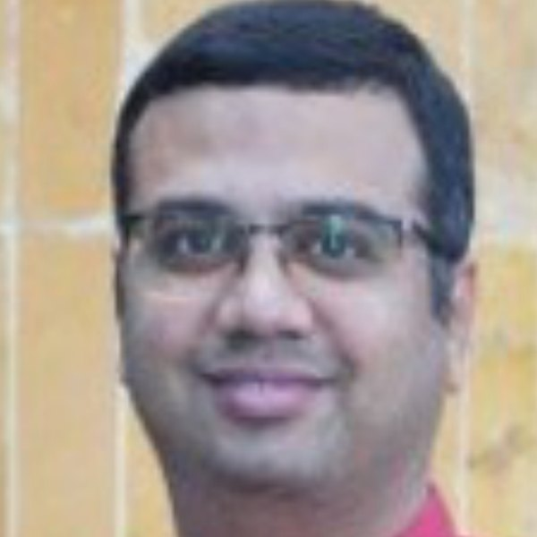
Shailesh J. Mehta School of Management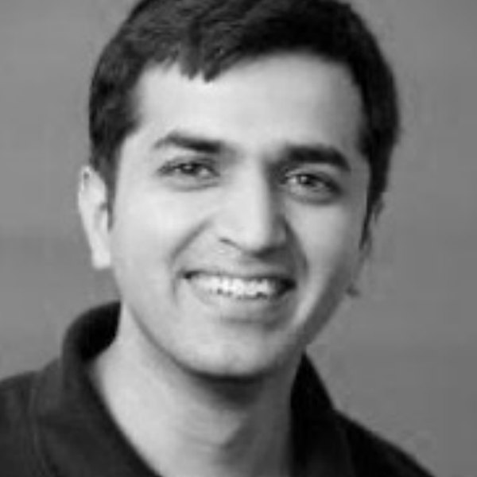
Industrial Design Centre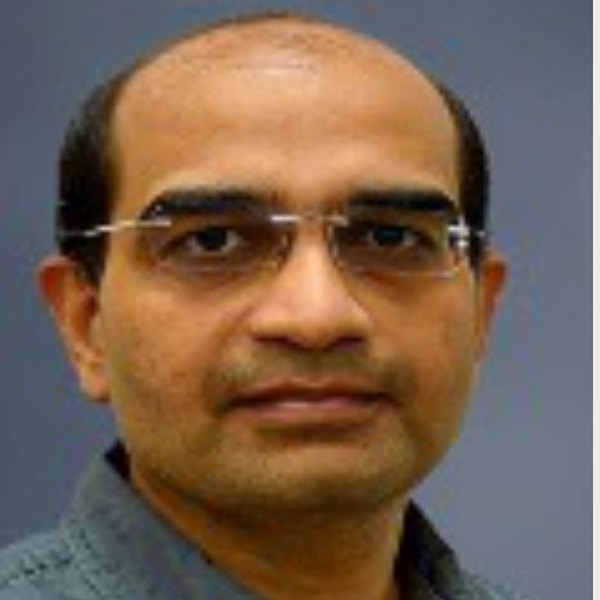
Metallurgical Engg. & Materials Science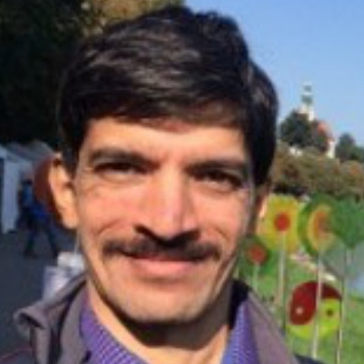
Mechanical Engineering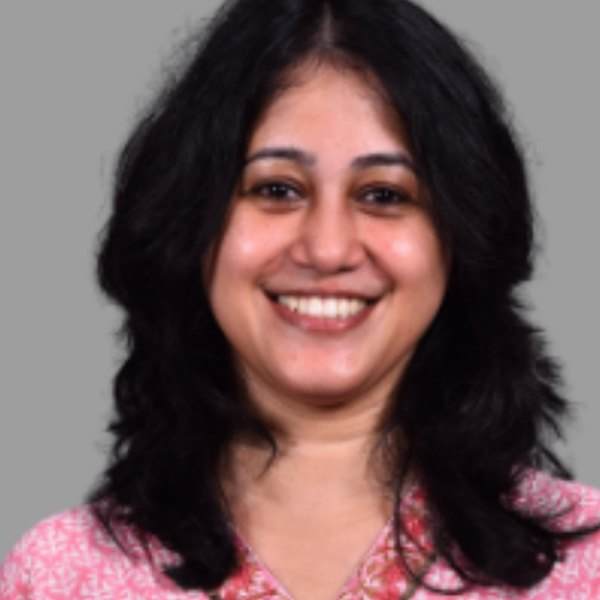
Biosciences & Bioengineering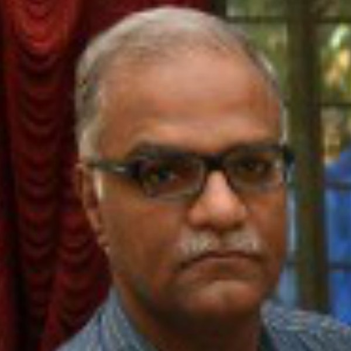
Humanities & Social Sciences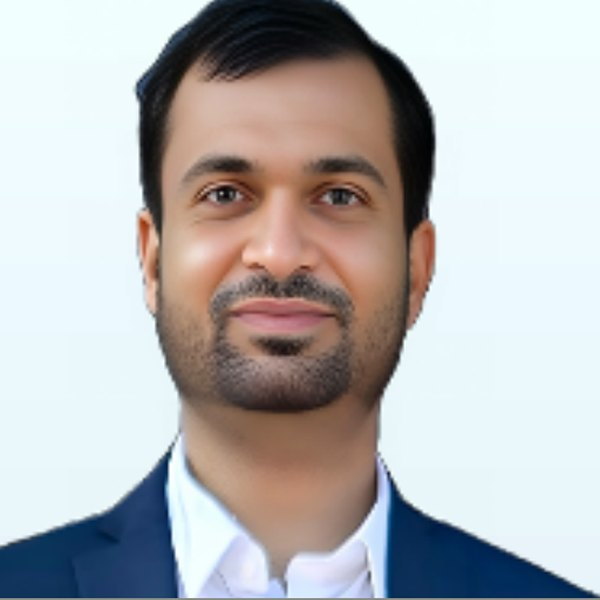
Civil Engineering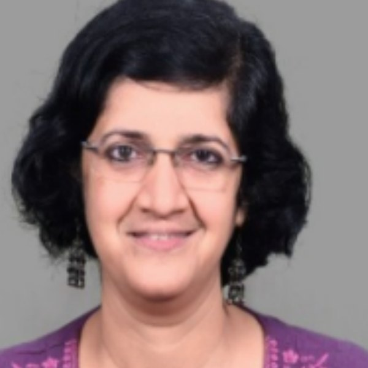
Biosciences & Bioengineering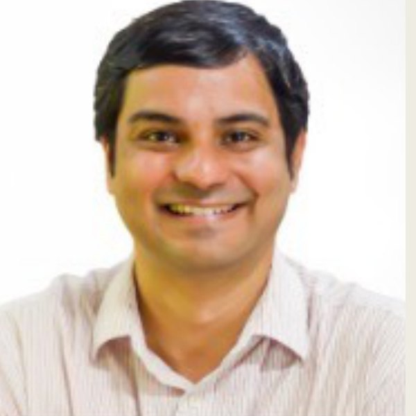
Mechanical EngineeringEvery student, one dedicated advisor
Beyond the committee, each CME student is paired with a Faculty Advisor (FacAd) who approves their individual Plan of Study and mentors them each semester.
Students also choose research guides across the institute — from Mathematics and Computer Science to Management, Biosciences and Design — for their seminars and projects.
Ready to design a degree that looks like you?
Complete your first year, keep your curiosity, and bring it to CME. The interview is a conversation — not an exam.